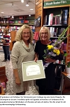

Siv Ingegerd Buhr Strömquist
Fil dr och docent vid Inst för nordiska språk, Uppsala universitet.
| Född: | 1942-09-18 Kusfors, Bastuträsk kbfd, Norsjö sn. [1] |
|---|
| Vigsel: | 1964-03-07 Uppsdala, Gamla Uppsala fs, Uppsala kn. [2] |
|---|
| Levde: | 1971 Bellmansg 24, Uppsala, Gamla Uppsala fs, Upopsala kn. [3] |
|---|
| Levde: | 1981 Luthagen 33:26, Sysslomansg 47C, Uppsala, domkyrko fs, Uppsala kn. [4] |
|---|
| Levde: | 1991 Luthagen 33:26, Sysslomansg 47C, Uppsala, domkyrko fs, Uppsala kn. [2] |
|---|
| Levde: | 2018 Uppsala, domkyrko fs, Uppsala kn. [5] |
|---|
| Barn: |
|---|
| Ruth Anna Gabriella Strömquist Myrdal (1966 - ) |
| Elsa Susanna Margareta Strömquist (1968 - ) |
| Siv Johanna Viktoria Strömquist (1971 - ) |
Noteringar
Språkvetare och författare till flera språkböcker, främst inriktade på skrivteori och skrivkonst. Hon är filosofie doktor och docent vid Institutionen för nordiska språk, Uppsala universitet, samt bosatt i Uppsala.
Strömquist medarbetade från 1994 till 2012 som skribent i Svenska Dagbladets språkspalt. Hon har också skrivit i Upsala Nya Tidnings språklåda. År 1995 belönades hon och Jan Svensson med Erik Wellanders språkvårdspris på 15 000 kronor vardera. Samma år tilldelades hon Uppsala universitets pedagogiska pris. Hennes forskningsområden är dels skrivprocess, textbildning, språkriktighet och kommunikation, dels dramatext.
Hon valdes 1990 till ordförande i Språkvårdssamfundet i Uppsala och efterträddes 1996 av Olle Josephson. I sin bok Språkfrågor har Siv Strömquist samlat de språkspalter som hon skrivit i Svenska Dagbladet mellan 1994 och 2000, och i boken Vart är vart på väg och andra språkfrågor i tiden återfinns språkspalter från åren 2001 till 2011. Böckerna behandlar bl.a. frågor om ords betydelse, typografi och satskonstruktioner. Hennes böcker återfinns ofta i litteraturlistor vid landets lärosäten.
Strömquist har varit redaktör för flera språkböcker, bl.a. om språksociologi. Hon har också varit med och arbetat med de nationella proven i svenska, som utarbetas vid Uppsala universitet. År 1999 tilldelades Siv Strömquist Svenska Akademiens pris för framstående förtjänster inom svensk språkforskning och språkvård.
Bibliografi i urval
Skrivprocessen i teori och praktik (1985)
Tal och samtal (1992)
Talarskolan. Talprocessen. Teori och tillämpning (1998)
Konsten att tala och skriva (1994, 5 uppl 2014)
Språkfrågor (2000)
Skrivboken. Skrivprocess, skrivråd och skrivstrategier (1989, 7 uppl. 2014)
Svenska på scen. Språk och språkanvändning i svensk dramatext från tre sekler (2004)
Inte bara repliker. Scenanvisningar och annan metatext i svensk dramatik under tre sekler (2006)
Uppsatshandboken. Råd och regler för utformningen av examensarbeten och vetenskapliga uppsatser (1998, 6 uppl. 2014)
Vart är vart på väg? Och andra språkfrågor i tiden (Norstedts, 2011)
Skiljeteckensboken. Skiljetecken, skrivtecken och typografiska grepp (Morfem 2013)
Priser och utmärkelser
1995 – Erik Wellanders språkvårdspris
1995 – Uppsala universitets pedagogiska pris
1999 – Svenska Akademiens pris för framstående förtjänster inom svensk språkforskning och språkvård
2014 – Disapriset
2015 - Läromedelsförfattarpriset Lärkan
2016 - Lars Salvius-priset
_____________________________________
Vi gratulerar vår författare Siv Strömqvist som i lördags tog emot årets Disapris. Siv Strömquist är docent i nordiska språk vid Uppsala universitet och författare till de populära böckerna Skrivboken och Konsten att tala och skriva. Hon får priset för sitt språkvetenskapliga författarskap.
Disapriset delas ut av Uppsala universitet och Studentbokhandeln i Uppsala. Traditionsenligt hölls prisutdelningen i Studentbokhandelns lokal under Kulturnatten i Uppsala i lördags. Prisutdelare var Eva Åkesson, rektor vid Uppsala universitet.
Juryns motivering lyder:
Siv Strömquist tilldelas Disa-priset 2014 för ett språkvetenskapligt författarskap kännetecknat av lyhördhet för svenska språkets nyanser och utveckling och en populärvetenskaplig insats präglad av folkbildarens klarhet och upptäckarglädje.
Siv Strömquist är docent i nordiska språk vid Uppsala universitet och har i forskning och undervisning ägnat särskilt intresse åt skrivande och språkriktighet. Under åren 1994-2012 svarade hon regelbundet på läsarnas språkfrågor i Svenska Dagbladet.
Siv Strömquist är för många väl känd för sin forskningsförmedlande verksamhet och sitt populärvetenskapliga författarskap. Hon har medverkat på ett otal studiedagar och föreläst om språkvård och skrivande i en rad olika sammanhang.
Siv Strömquist är författare till Skrivboken som gavs ut första gången 1989 och som genom åren kommit att handfast hjälp för dagens skribenter. Den vänder sig till alla som skriver och vill lära sig mer om hantverket. Hon har också skrivit Konsten att tala och skriva som blivit en klassisk handbok för alla som vill utveckla sin kommunikativa förmåga. Båda böckerna har i år kommit i nya upplagor anpassade till dagens tal- och skrivsituationer.
Disapriset instiftades av Uppsala universitet och Studentbokhandeln i Uppsala för att främja populärvetenskapligt författande och delades ut första gången 2001. Prissumman är på
25 000 kronor.
www.mynewsdesk.com/se/gleerups_utbildning_ab/news/siv-stroemquist-faar-disa-priset-2014-92693
_____________________________________
Docent Siv Strömquist har tilldelats årets Disapris 2014). Juryns motivering lyder: "Siv Strömquist tilldelas Disa-priset 2014 för ett språkvetenskapligt författarskap kännetecknat av lyhördhet för svenska språkets nyanser och utveckling och en populärvetenskaplig insats präglad av folkbildarens klarhet och upptäckarglädje".
Prissumman är på 25 000 kronor.
Siv Strömquist disputerade vid Uppsala universitet 1987 på avhandlingen "Styckevis och helt", om styckeindelningens roll i skrivprocessen. Hon har tidigare mottagit Svenska Akademiens pris för "framstående tjänster inom svensk språkforskning och språkvård" och Erik Wellanders språkvårdspris.
Disapriset instiftades 2001 av Uppsala universitet och Studentbokhandeln i Uppsala för att främja populärvetenskapligt författande.
www.dalademokraten.se/noje/siv-stromquist-far-arets-disapris
STRÖMQUIST, SIV INGEGERD, Enskild firma reg. 2005-02-03
Litterärt och konstnärligt skapande
_____________________________________________________________
Porträtt: Siv Strömquist
Hur ska det gå för interrobangen?! Ja, det kan man fundera över. För det är lätt att missa att skiljetecknet, som är en kombination av ett fråge- och utropstecken, existerar.Interrobangen uppfanns av reklam-makaren Martin K Speckter på 1960-talet när han ville ha ett tecken som kunde användas vid retoriska frågor som ”Vad sägs om det?! ” Det är Siv Strömquist, språkvetare, språkvårdare och författare som under en föreläsning väcker frågan om interrobangens framtid.
17 OKT 2016
Tyck till
Foto: Mikael Wallerstedt
Skriver ständigt. Hon är pensionär sedan några år, men arbetar fortfarande mycket, både i hemstaden Uppsala och med trädgården på lantstället i Närke. Foto: Mikael Wallerstedt
– Visste ni att kommatecknet var det enda skiljetecknet i 1947 års Skrivregler? Det har blivit utsatt för en tydlig förändring. 1991 detroniserades det.
Förresten gillar Siv Strömquist semikolon. De är till och med ”kolossalt intressanta”. Utan att burdust sätta punkt, binder de ihop en mening.
– Det går inte att blunda för att många människor tycker att semikolon är ett spännande tecken. Det älskas och hatas av lika många. En del tycker att det är pretentiöst, men det är det inte! Det har till och med en egen dag!
Kommatecknet, å sin sida, är en ”besvärlig rackare” som haft olika funktion genom tiderna. Och trots att vi frigjort oss från ”satskommateringens bojor” måste vi ändå tänka efter var vi placerar det.
Hon kryddar med ett exempel: ”Han lade handen på hennes ända, tills hon sakta drog den åt sig”. Att jämföra med ”Han lade handen på hennes, ända tills hon sakta drog den åt sig”.
– Jag tror att kommatecknet kommer att kräva fortsatt mycket plats i skrivreglerna. Språkrådet förespråkar tydlig kommatering.
Siv Strömquist har gjort ett kort stopp i hemstaden Uppsala för att om några dagar åter bege sig till lantstället i ett naturreservat i Närke. Där umgås hon med barnbarn och odlar sin trädgård till långt in i oktober.
Hon är pensionär sedan några år men arbetar fortfarande flitigt med författande, föreläsningar och språkkrönikor. Det finns alltid något nytt i språket att fundera över, så mycket som är motsägelsefullt och fascinerande.
– Jag har alltid jobbat mycket och älskar mitt jobb! Numer undervisar jag inte och saknar eleverna.
Men skiljetecken – kan det finnas så mycket att säga om dem?
– Det tror de flesta att det inte gör. De är små och oansenliga, men när man tittar närmare på texter så är det skiljetecknen som gör jobbet.
De arbetar för tydlighet och läsbarhet, men även för textens nyanser och uttrycksfullhet. Det är därför det är så viktigt att välja rätt!
Låt oss ta ett kliv bakåt i tiden. I den första svenska språkhandledningen från 1600-talet var budskapet att skiljetecknen var till för textens tydlighet. Sedan startade en utveckling där tecknen skulle vara till för dem som skulle läsa högt. De hade en retorisk funktion, förklarar Siv Strömquist.
Så såg det ut till i mitten av 1800-talet då kommatecknet plötsligt skulle ha en grammatisk funktion. 1829 utkom Svensk rättstafnings-lära med Carl Jonas Love Almqvist som författare.
– Då fick vi satskommatering och började betrakta hela skiljeteckensgänget som grammatiska markörer.
Strid uppstod mellan grammatiker och tydlighetsivrare. Kommatecknet, som skulle markera grammatiska enheter, var den mest framträdande representanten i gruffet. Grammatikerna avgick med segern.
– Det här är något som vi, ju äldre vi är, har varit med om i skolan. Till exempel var det förbud mot att sätta komma före att.
Den grammatiska synen på skiljetecken ledde inte till bättre texter. I längden drog de som tyckte att tydlighet var viktigast det längsta strået. Tecknen är till för att mottagaren ska förstå vad avsändaren avser med texten, betonar hon.
– Jag brukar kalla dem för läsbarhetsmarkörer. I dag är den viktigaste regeln att hellre använda för få kommatecken än för många.
Foto: Mikael Wallerstedt
Medfött intresse. Det finns alltid något nytt i språket att fundera och fascineras över, tycker Siv Strömquist, docent i nordiska språk vid Uppsala universitet. Foto: Mikael Wallerstedt
Intresset för språk är medfött, hävdar Siv Strömquist.
Efter gymnasieåren på halvklassisk linje utbildade hon sig till gymnasielärare i svenska och engelska. Under de tio åren som lärare på framför allt yrkesprogrammen kände hon hela tiden ett stort behov av att fortbilda sig.
– Är man född pedagog så är man.
Till slut hade hon gått så många kurser av olika slag att det enda som återstod var doktorandstudier. Siv Strömquist insåg att om hon valde språkvetenskap så fick hon ägna sig åt båda sina stora intressen – språk och litteratur.
– Jag måste erkänna att jag skrev min avhandling om styckeindelning. Det är det många som skrattat åt. Men indraget är ett intressant tecken, säger hon nöjt.
Genom sin forskning kom hon i kontakt med det amerikanska projektet writing process. Det handlar om att inte bara rätta uppsatser, utan att tala om hela arbetet från idé till färdig uppsats. Något hon tyckte att alla svensklärare borde få kännedom om.
– Det fick ett väldigt genomslag och var i många år det som tog min tid. Jag föreläste för lärare i alla ämnen om skrivprocessen. Särskilt roligt var det att föreläsa för andra professioner som jurister och civilingenjörer.
1988 kom boken Skrivprocessen, som vände sig till lärarkollegor, ut för första gången. Sedan dess har det blivit åtskilliga böcker om språk, varav många kommit i uppdaterade upplagor. Tanken med Skrivboken, som vänder sig till studenter, var att slippa föreläsa så mycket.
– Men det blev bara värre!
I början av 1990-talet var hon involverad i ett projekt som skulle kartlägga synen på skiljeteckensanvändning i svenska handböcker.
– Då insåg jag att det behövdes en bok om det för allmänna läsare. Men jag fick inte tid att skriva den förrän jag gick i pension.
Under nästan 20 år skrev Siv Strömquist i Svenska Dagbladets språkspalt. Där redde hon ut språkliga förändringar och lyfte fram språkliga generationsklyftor som uttrycket Orsa kompani lovar inget bestämt och Kör i vind. Rappt och roligt.
– I början var det svårt. Jag fick många brev från upprörda och irriterade läsare. Men efter ett tag så insåg jag att det bara handlade om språkintresse och att det gällde att bortse från att tonen var lite hård.
I sin sista spalt konstaterade hon att karaktären på läsarfrågorna hade förändrats från rätt eller fel och lämpligt eller olämpligt till ett större intresse för ordspråk och talesätt, ords betydelse och skiljetecken. Språkpoliserna hade blivit färre och de genuint språkintresserade fler.
– Det är en annan språksyn i samhället i dag. Det är bra. Språk utvecklas. Att hålla på benhårda regler gör ingen människa glad.
Själv börjar hon ibland meningar med ”och” och ”men” samt skriver ofullständiga meningar.
– Det var ju otänkbart när jag började som språkspaltsskribent.
Och, hur ska det gå för interrobangen? Det är en svår fråga, tycker Siv Strömquist, som trots allt tror på dess framtid. Vill man visa att det är en retorisk fråga är det ett bra tecken.
– Det beror lite på hur många som tycker att det är bra att använda. Det skulle underlätta om det fanns på tangentbordet. Vi får se!
_________________
Namn Siv Strömquist.
Ålder 74.
Yrke Docent i nordiska språk vid Uppsala universitet. Disputerade 1987 på avhandlingen Styckevis och helt där hon kartlade hur gymnasieelever handskas med styckeindelning i uppsatser.
Gör Föreläser. Skriver artiklar i Språktidningen, språkkrönikor i nättidningen Nyfiken Grå och Läromedelförfattarförbundets tidning Manus.
Böcker i urval Skrivprocessen, Skrivboken, Svenska på scen, Vart är vart på väg?, Skiljeteckensboken.
Familj Make, tre döttrar, två svärsöner, sex barnbarn, en katt.
Gör på fritiden Den går mest åt till trädgården på landet och barnbarnen. Läser mycket.
Favoritskiljetecken Alla är lika viktiga.
Firar semikolonets dag Skriver varje år en språkkrönika med en hyllningstext till semikolonet.
På nattygsbordet Kerstin Ekmans Då var allt levande och lustigt.
tidningenalfa.se/portratt-siv-stromquist/
Personhistoria
| Årtal | Ålder | Händelse |
|---|
| 1942 |
|
Födelse 1942-09-18 Kusfors, Bastuträsk kbfd, Norsjö sn [1] |
| 1946 |
3 år |
Systern Inger Margareta Buhr föds 1946-07-17 Petiknäs 2:29, Bastuträsk kbfd, Norsjö sn [6] |
| 1964 |
21 år |
Vigsel Stefan Karl Gunnar Strömquist 1964-03-07 Uppsdala, Gamla Uppsala fs, Uppsala kn [2] |
| 1966 |
23 år |
Dottern Ruth Anna Gabriella Strömquist Myrdal föds 1966-01-20 Bellmansg 24, Uppsala, Gamla Uppsala fs, Upopsala kn [3] |
| 1968 |
25 år |
Dottern Elsa Susanna Margareta Strömquist föds 1968-02-04 Bellmansg 24, Uppsala, Gamla Uppsala fs, Upopsala kn [3] |
| 1971 |
|
Levde Stefan Karl Gunnar Strömquist 1971 Bellmansg 24, Uppsala, Gamla Uppsala fs, Upopsala kn [3] |
| 1971 |
29 år |
Dottern Siv Johanna Viktoria Strömquist föds 1971-09-18 Bellmansg 24, Uppsala, Gamla Uppsala fs, Upopsala kn [4] |
| 1981 |
|
Levde Stefan Karl Gunnar Strömquist 1981 Luthagen 33:26, Sysslomansg 47C, Uppsala, domkyrko fs, Uppsala kn [4] |
| 1991 |
|
Levde Stefan Karl Gunnar Strömquist 1991 Luthagen 33:26, Sysslomansg 47C, Uppsala, domkyrko fs, Uppsala kn [2] |
| 1993 |
50 år |
Fadern Lars Olof (Olle) Buhr dör 1993-08-01 Kristallg 6, Vretstorp, Viby fs, Hallsbergs kn [7] |
| 1998 |
55 år |
Modern Rut Ingegerd Amalia Dahlberg dör 1998-08-16 Kristallg 6, Vretstorp, Viby fs, Hallsbergs kn [8] |
| 2018 |
|
Levde Stefan Karl Gunnar Strömquist 2018 Uppsala, domkyrko fs, Uppsala kn [5] |
Dokument
Källor
| [1] | SCB Födda AC Bastuträsk kbfd 37/1942 |
| |
| | |
| [2] | Mantalslängd 1991, Uppsala län |
| |
| | |
| [3] | Mtl Uppsala län 1971 |
| |
| | |
| [4] | Mtl Uppsala län 1981 |
| |
| | |
| [5] | www.ratsit.se/sok/avancerat/person |
| |
| | |
| [6] | Mtl Sveriges befolkning 1950 |
| |
| | |
| [7] | RTB 93 / SPAR 92f / SPAR 95 |
| |
| | |
| [8] | RTB 98 / SPAR 92f |
| |
|
 |
| 2015. Siv Strömquist föreläser på Kulturhuset i Stockholm. |
| |
|  |
| 2014. Docent Siv Strömquist till höger har belönasts med Disa-priset. |
| |
|
2018-04. Siw Strömquist
Skriver ständigt. Hon är pensionär sedan några år, men arbetar fortfarande mycket, både i hemstaden Uppsala och med trädgården på lantstället i Närke.
Foto: Mikael Wallerstedt
tidningenalfa.se/portratt-siv-stromquist/
|
| |
|
2018-04. Siw Strömquist
Medfött intresse. Det finns alltid något nytt i språket att fundera och fascineras över, tycker Siv Strömquist, docent i nordiska språk vid Uppsala universitet.
Foto: Mikael Wallerstedt
tidningenalfa.se/portratt-siv-stromquist/
|
|

{kind=link}
{kind=link}
{kind=link}